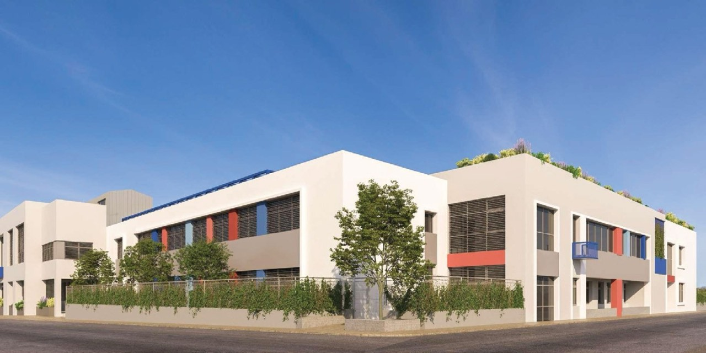
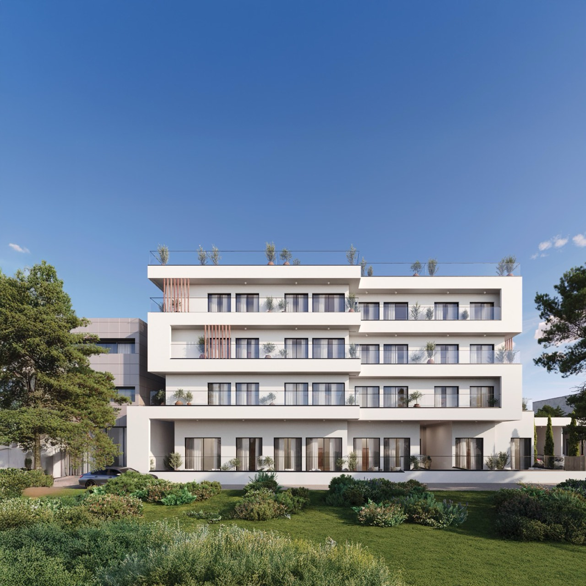
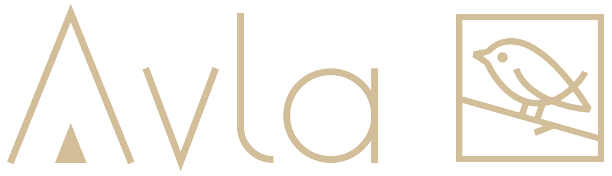
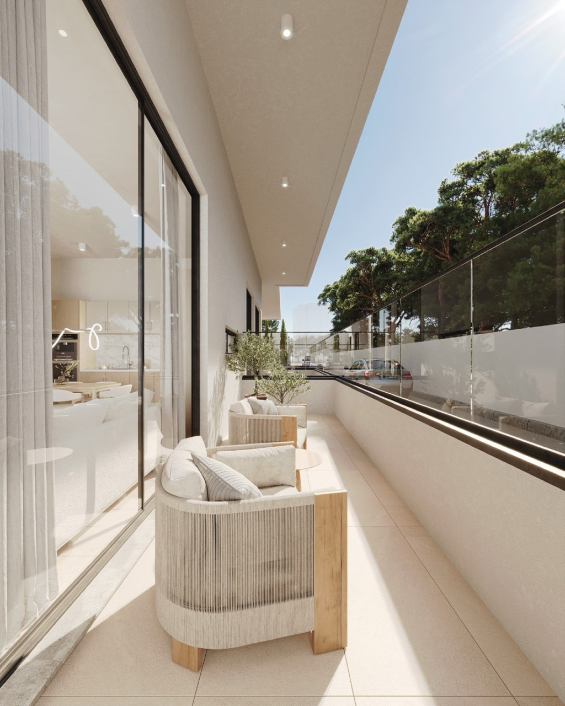
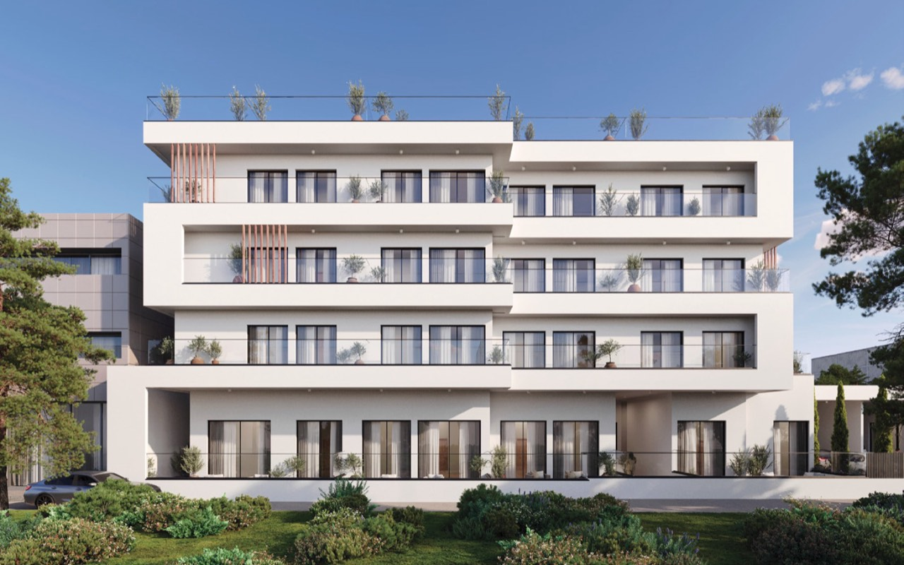
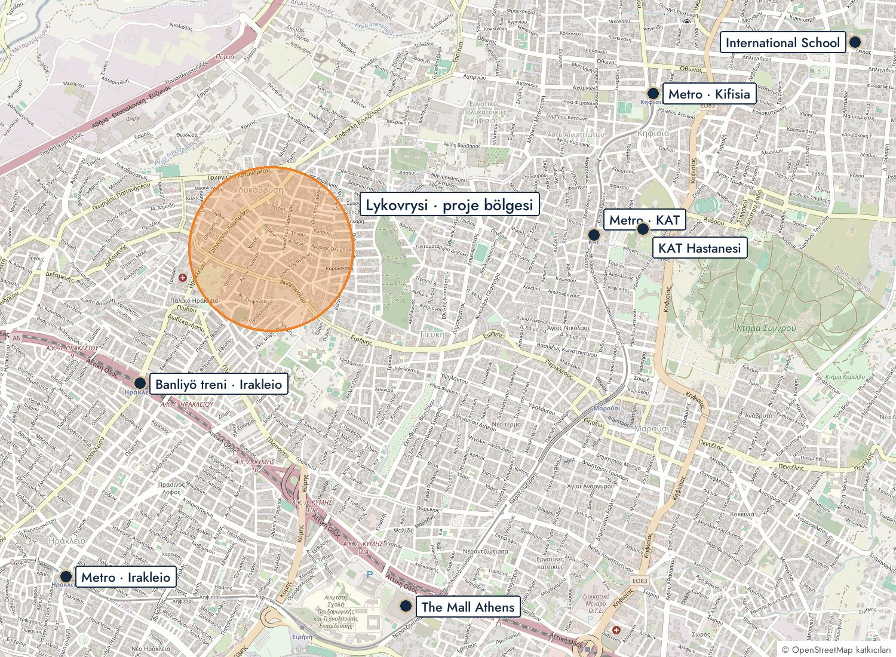
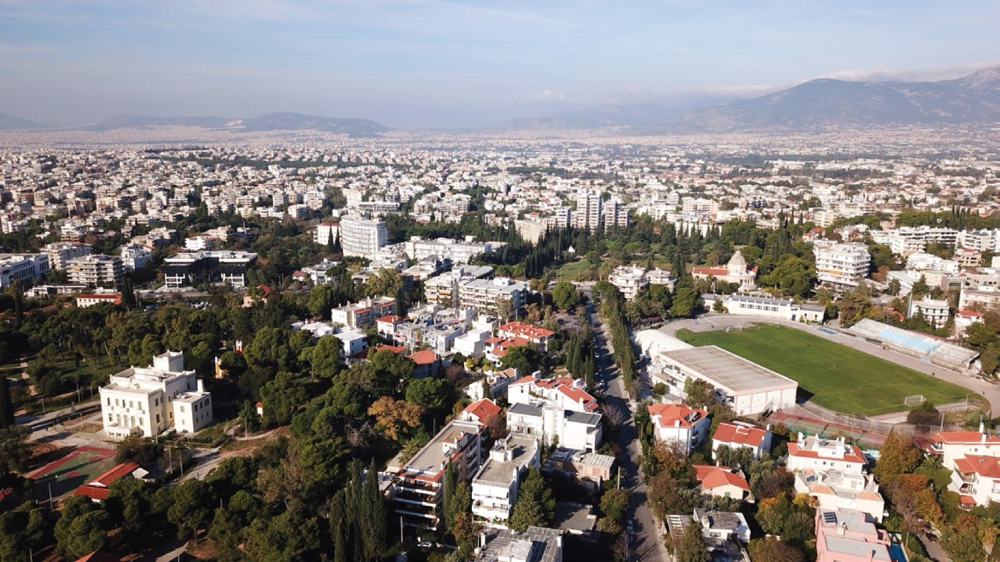
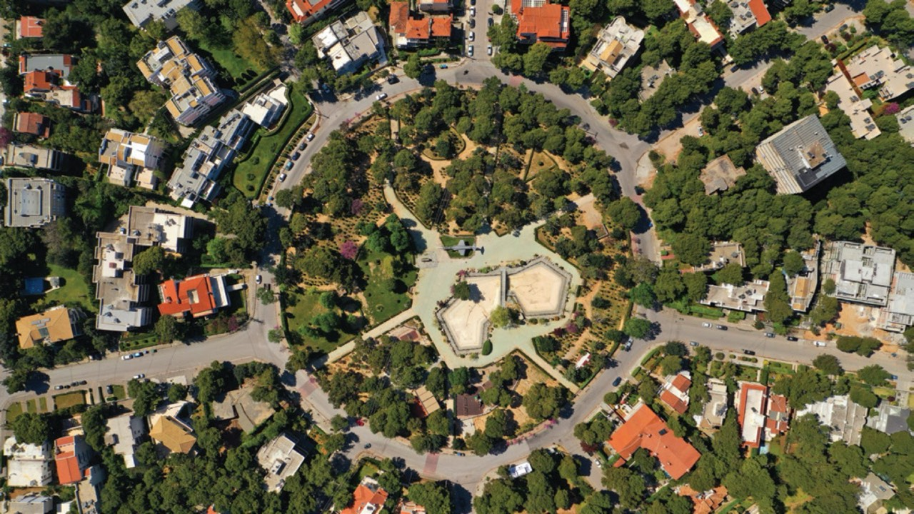
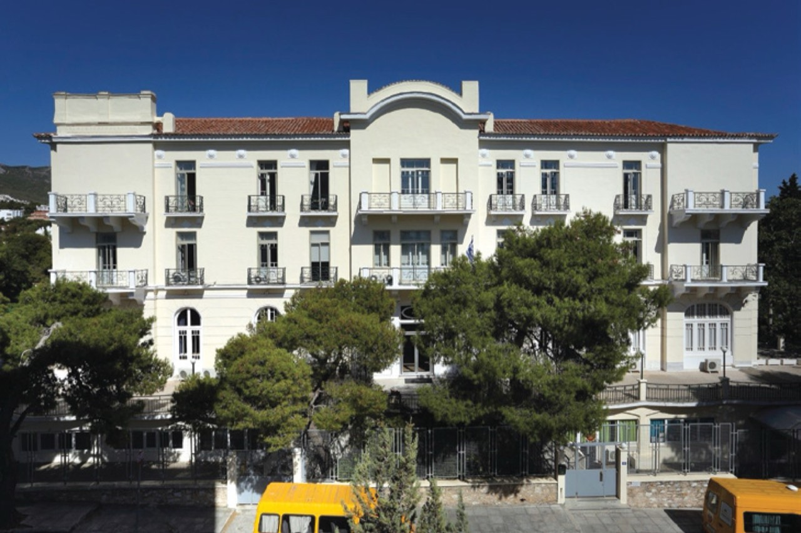
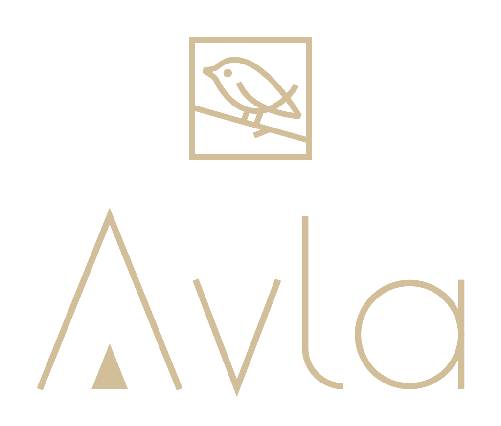

1,6 kmSt. Catherine's British School
1956'dan beri eğitim veriyor. 54 ülkeden 3–18 yaş arası 1.150'yi aşkın öğrenci; İngiliz müfredatı, IGCSE ve IB Diploma.


A0321 · KUZEY ATİNAEn üst katta 34 m² teraslı 1+1 ve zemin katta 21 m² bahçeli 2+1. 3 yıl %4 kira garantisi. Okullar, iki büyük AVM ve hastaneler on dakika içinde. Teslim Aralık 2027.
Kuzey Atina üzerinden binaya, salondan mutfağa, en üst kat terasından zemin kat bahçesine. Görseller temsilîdir.
44 dairelik binada iki daire kaldı. D04 en üst katın son dairesi: önünde 34 m² teras.
GF12 zemin katta, 21 m² özel bahçesiyle binanın en geniş dairelerinden biri.


| Daire | Kat | Net m² | Brüt m² | Fiyat | € / m² net | € / m² brüt | Plan |
|---|---|---|---|---|---|---|---|
| D04 · 1+1 · eşyasız | 4. kat (en üst) | 46 | 80 | €278.000 | €6.043 | €3.475 | |
| D04 · 1+1 · tam eşyalı | 4. kat (en üst) | 46 | 80 | €288.000 | €6.261 | €3.600 | |
| GF12 · 2+1 · eşyasız | Zemin kat · bahçeli | 80,55 | 101,55 | €380.000 | €4.718 | €3.742 | |
| GF12 · 2+1 · tam eşyalı | Zemin kat · bahçeli | 80,55 | 101,55 | €394.000 | €4.891 | €3.880 |
Brüt alan iç alan ile terasın toplamıdır. Ölçüler geliştiricinin satış broşüründendir; sözleşmede tapu ölçüsü esas alınır. Bütün odalarda klima, fırın, ocak ve davlumbaz ücretsizdir. 1+1 için tam eşya paketi (+€10.000) bunlara ek olarak TV, buzdolabı, çamaşır makinesi, kanepe, yemek masası ve 4 sandalye, sehpa, TV ünitesi, yatak ve baza ile komodini kapsar; 2+1 paketi +€14.000. D04 geliştirici tarafından opsiyonlanmıştır. Fiyatlar geliştiricinin 22 Ekim 2026 tarihli fiyat listesindendir.
Lykovrysi, Atina'nın en seçkin kuzey banliyösü Kifisia'nın hemen batısında, yeşil ve az katlı bir aile mahallesi. Kifisia'nın okul, alışveriş ve sağlık olanaklarını daha uygun bir fiyat bandında yaşatır. Ana caddeden Attiki Odos otoyoluna ve ulusal yola hızlı çıkış var.



Mesafeler kuş uçuşudur; Syntagma ve havalimanı için yol mesafesi verilmiştir. Süreler trafiksiz yaklaşık değerlerdir, yoğun saatlerde uzar. St. Catherine's ve ISA mesafeleri geliştiricinin broşüründen, diğerleri açık harita verisinden ölçülmüştür.
İki köklü uluslararası okul bu evden kısa bir sürüş mesafesinde; mahallenin devlet ilk ve ortaokulları ise yürüme mesafesinde.

1,6 km1956'dan beri eğitim veriyor. 54 ülkeden 3–18 yaş arası 1.150'yi aşkın öğrenci; İngiliz müfredatı, IGCSE ve IB Diploma.

4,7 km55'ten fazla ülkeden yaklaşık 700 öğrenci. Üç IB programının (PYP, MYP, Diploma) üçünü birden sunan Yunanistan'daki tek okul.
Zemin ve üç normal katın üstünde geri çekilmiş teraslı bir kat. Zemin kat dairelerinin özel bahçeleri, üst katların geniş balkonları var.
Görseller bilgisayarda üretilmiş temsilî görsellerdir; uygulamada farklılık olabilir.
Toplam 44 daire: zeminde 15, A, B ve C katlarında sekizer, en üst katta 5. A, B ve C katları aynı plandadır.
Planı tam ekranda açmak için dokunun; açıkken dokunarak ya da + ile yakınlaştırabilirsiniz.
Şartlar geliştiricinin rezervasyon sözleşmesi örneğinden ve 21 Ekim 2026 tarihli yazılı cevabından alınmıştır.
İmzadan önce hepsini Türkçe birlikte okuruz.
Tahmini tamamlanma Aralık 2027. Bu tarihten sonraki 6 ay aşılırsa, kira garantisiyle aynı oranda, satış bedelinin yıllık %4'ü kadar gecikme cezası aylık olarak işler (D04 için ayda yaklaşık €927, GF12 için €1.267). Bu oranı sözleşmeye yazdırıyoruz. Mücbir sebepler hariçtir.
Bağlantı başvurusunun en erken tarihte yapıldığı belgelenir. Belge verilmezse ek süreden sonra bağlantı yapılana kadar aylık kira tutarında ceza ödenir.
D04 için yılda €11.120 (üç yılda €33.360), GF12 için yılda €15.200 (üç yılda €45.600). Sözleşme örneğine göre toplam tutar tapu imzasından sonraki 30 gün içinde peşin ödenir; kira süresi elektrik, su ve internet bağlantısından 2 ay sonra başlar.
Geliştiricinin yazılı beyanıdır; "en az B+" ifadesi sözleşmeye yazdırılır.
Geliştirici iptal ederse kaporanın tamamı iade edilir.
Bu daire için Avla'ya hizmet bedeli ödemezsiniz.

Planı, fiyatı ve rezervasyon şartlarını tek görüşmede anlatalım.
WhatsApp'tan yazmanız yeterli.
Avla · Güvenilir Çözüm Ortağınız
Avla Gayrimenkul A.Ş. · Caferağa, Kadıköy, İstanbul · avlarealestate.com